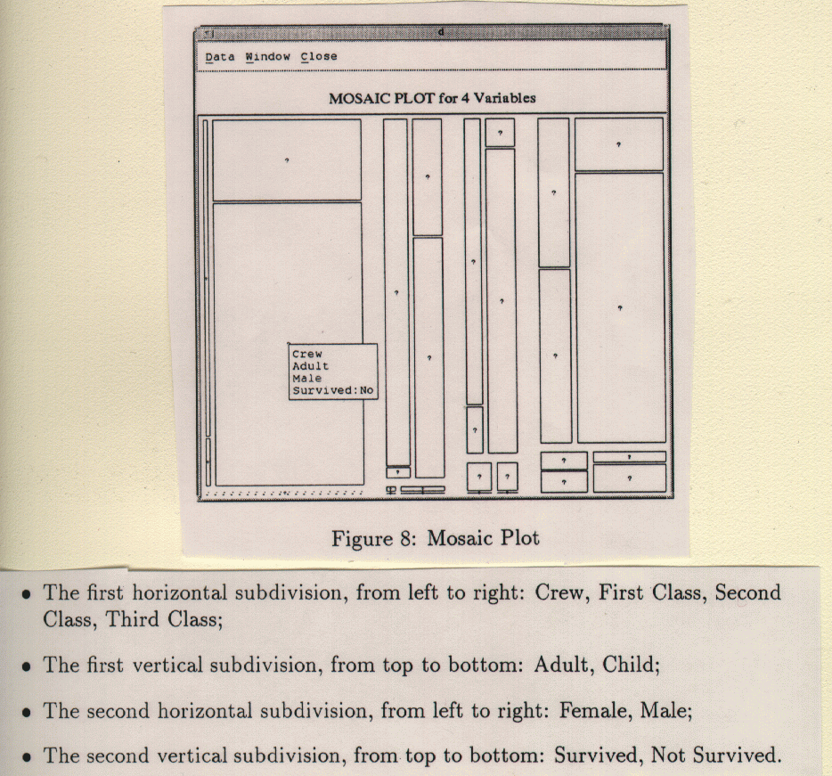

Stat 2000, Section 001, Homework Assignment 6 (Due 10/16/2002 in class
or by 11:59pm via FAX or e-mail)
- 0) Reading: Sections 2.4, 2.6, 2.7 (when working with the 3rd edition)
or Sections 2.4, 2.5, and Handout of the old Section 2.6
(when working with the 4th edition)
- 1) Look at Assignment 5, Question 1 (the weather data) again.
(7 Points)
- Calculate the residuals.
- Draw at least two different residual plots (make clear
what you plot on the x-axis each time) and state your
conclusion.
- List at least two lurking variables that could have an
influence on the weather data but do not show up in this
data set.
- Construct your residual plots with
http://dostat.stat.sc.edu/webstat/3.0/.
To do so, select "Stat" -> "Regression" -> "Simple Linear".
Then select the appropriate variables.
Click on "Next" and ticmark the option
"Save Residuals". When you click on calculate now,
a new column called Residual will be added to the data set - the residuals.
Now construct your residual plots again with WebStat.
Can you find data for some of your lurking variable on the Web?
If so, extract this data and add it as a new column to WebStat.
Is there any visible pattern with respect to this lurking variable?
The "Weather" data set is available at
http://www.math.usu.edu/~symanzik/teaching/2002_stat2000/hw05_weather.dat.
If you still have problems to read in the data from the URL
or via copy/paste, just type it in.
When working with WebStat, you should also explore its
linked brushing capabilities. When you click on the
left mouse button in a scatterplot of the residuals or the plot
with the regression line, you can enlarge a small box.
All points within the box will be brushed. Also, the
identifier in the data table is being highlighted in the
same color. Alternatively, you can mouse click on
this identifier in the data table and the point will
be highlighted in the graphical displays.
To unbrush a point, just click on its
identifier in the data table again. Linked brushing
works well for multiple graphical displays.
You can work on this last part by yourself or in
small groups of up to 3 students. Please turn in your
group solution separately from the answers to
the other questions and make sure that all names of group
members are listed on this part.
- 2) Look at Assignment 5, Question 3 (the photocopying paper) again.
(7 Points)
- Calculate the residuals.
- Draw at least two different residual plots (make clear
what you plot on the x-axis each time) and state your
conclusion. Does it make a difference if you know that
Student 1 (Michelle) did the first 5 measurements and Student 2 (John)
did the last 5 measurements?
- List at least two lurking variables that could have an
influence on the outcome of the measurements of the
photocopying paper but do not show up in this
data set.
- 3) Draw a Mosaic Plot for the data from Table 2.14 in
the 3rd edition of Moore/McCabe (see handout). (6 Points)
The horizontal subdivisions, from left to right, should be
the age groups "25 to 34", "35 to 54", and "55 and over".
The vertical subdivisions, from top to bottom, should be
the education levels "College 4 Years", "Some College",
"Completed High School", and "Uncompleted High School".
The SAS output in Figure 2.39 in the 3rd edition of
Moore/McCabe (see handout) might be helpful
when constructing the Mosaic Plot.
- 4) Look at the Mosaic Plot of the Titanic data again. (5 Points)

- a) Mark the following regions, using the letters "A", "B", "C":
"A": Second Class, Child, Female, Survived
"B": Third Class, Adult, Male, Not Survived
"C": Crew, Adult, Female, Survived
- b) Indicate which of these statements is correct and which is
incorrect:
i) A very large percentage of First Class, Adult, Female survived.
ii) A very large percentage of Second Class, Adult, Male survived.
iii) There were more First Class than Third Class passengers.
iv) There were more Crew members than First Class and Second Class
passengers together.